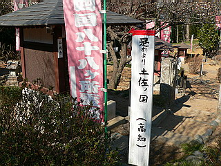

真東寺/埼玉県美里町
埼玉県の北部、美里町の真東寺に住職が自ら作った四国八十八ヵ所のお砂踏みミニ霊場がある、というハナシを聞いて行ってみた。
ミニ霊場といえば一般的にはお寺の裏庭に石像がズラリと並ぶパターン、はたまたお堂の中や地下に写し本尊が並んでいて、なんてパターンもあるが、ここのはややスケールが大きい。
お寺の裏の丘陵地をごっそり使った大規模なミニ霊場なのだ。
ただしこれまたよくありがちなお寺の裏山の山道に石像が点在しているようなヤワな霊場ではない。
どんな霊場かというと…まあ、ご覧下さいな。
真東寺は周辺を田畑に囲まれたなだらかな丘陵地にある。
境内に入るとさほど大きくない本堂と客殿があり、何の変哲もない極めて普通のお寺のようだ。
しかし本堂の前には「四国霊場 お砂踏み場 お大師さまと同行二人の遍路旅！」との看板がある。
振り返れば本堂の正面には弘法大師を天辺に頂いた東屋風の建物が。
これは曼荼羅塔といい、密教諸尊の悟りの世界を表現したものだという。
中に入ると地味な外観とは裏腹にゴージャスな天井。
よ〜く見たら五円玉をネジ止めしてました…
悟りの世界は五円玉で囲まれているという事なんでしょうか。あ、ご縁（五円）か…
で、その下には四国の地図と仏足が刻まれた石板。
ここから四国八十八ヵ所がはじまる、という事なんでしょうか。

本堂でお参りしてから早速プチ巡礼の旅に出かけましょう。
本堂の裏手にはお地蔵さんと卒塔婆が林立するエリアがあり、その真ん中に謎の建造物がある。
お堂と言うには小さすぎ、祠と言うには大きすぎる。
これこそが四国八十八ヵ所一番札所霊山寺の写し本尊が祀られている場所だ。
いよいよバーチャルお遍路のはじまりだ。
本尊さんの上には日曜大工で作ったかのような建物のミニチュアがある。
霊山寺の多宝塔を象ったのだろうか。霊山寺の住職が見たら卒倒しそうなデフォルメっぷりだ。
次を探すまでもなく10メートル程離れたところに早速二番札所の極楽寺。
さすがに一番札所に比べるとググッと地味にスペックダウン。
先を見ると赤い幟がはためいており、所々に同じような祠のようなモノがある。
どうやら各札所の写し本尊が納められているようだ。
三番金泉寺の祠の隣には龍の口から水が出ている。
説明によれば「このお地蔵さまに供養の水を手向けますと十万億土の久遠の彼方から喜びの声が鳴龍の如く聞こえる人のみに聞えて来ます」とある。金泉寺の寺名の由来となった大師の掘った井戸のオマージュなのか。
ふむふむ。きっと水琴窟のような仕組みなのだろう。説明に従って、柄杓でお地蔵さんに水を掛けて、聴音筒を排気口に当てて、と。…
…ぐううううおおおおお〜〜〜〜んんんんん…
…残念ながら私には十万億土の彼方から届く歓喜の声は聞こえてきませんでした…
愚息も十万億土の声にチャレンジ。「これ掃除機のパイプじゃあ…」違います！大変ありがたい聴音筒なんです！
と、いうようにこのミニ霊場の札所には所々にオリジナルの札所の由来や名所などが織り込まれているので要注意だ。
もしお遍路に行かれた事がある方などはご自分の遍路体験をここで追体験しながらもう一度お遍路気分を奮い立たせて明日からの日々の生活の糧とするのもまた御一興かと。
さすがに五番地蔵寺の羅漢堂とかはなかったけどね〜。
そんなこんなでゲートを潜ると八番熊谷寺。
と、そこに何処からかお経が聞えてきたではないか。
周辺には我々以外誰も居ないのに何故だ？
と思ってゲートを見上げたらセンサーとスピーカーが付いてました。どこかでお寺の人がゴルゴ13のように我々が来るのを待ち構えてスイッチONした訳じゃあないんですね。
先ほどの一番三番のように気合を入れて作ってある札所もあればかなりあっさり目の札所もある。
これは九番法輪寺。水子地蔵よりもちっちゃい。
この辺のテンションの高低差はここを作った住職の好みの差なのだろうか？
所々、順路の看板があり遍路道へといざなってくれるのだが、看板の柱に人生訓が書いてあったりして見逃せない。
順調に十一番十二番十三番と参拝をこなしていく。
この辺、小さな祠ばかりでチョット中弛み感が漂い始めたと思っていたらこんな素敵な塔が。
十四番常楽寺である。
ブロック積みの躯体に木造の屋根、天辺には灯籠まで乗っていてタダモノではない雰囲気を漂わせている。
これも住職手作りの仏堂なのだろう。
四国霊場中唯一弥勒菩薩を本尊とする札所だが、正直あまり大きなお寺でもなくわざわざ他の札所と差別化をはかる理由が良く判らないのだが、住職が個人的に強い思い入れを持っているのは間違いないのだろう。

息つく間もなく十七番井戸寺。
ここには大師が一晩で掘ったという面影の井戸のレプリカがある。
覗き込んで自分の姿が映れば無病息災、しかし映らなかった場合は3年以内に不幸が訪れるといわれているこの井戸、恐る恐る覗き込んでみると…
…井戸の底は鏡になってました。
さて、そんなこんなで霊場の奥深くまでやってきたがまだまだ最初の徳島県すら道半ば。
一体何時までかかるのやら。
もっとも本当のお遍路だったら車で飛ばしても一日で廻りきれるかどうか、というだけの札所をわずか数十分でこなしてはいるのだが。
何故か卍印の台座の石塔がある。丁度裏側なので何の石塔なのかは後々知る事になるがインパクト大。
さて、再び遍路道。いよいよ発心の道場といわれる徳島県の札所も残りわずかだ。
二十二番平等寺。
ここは以前訪れたことがある。いざリ車が奉納されていたお寺だ。
…と思ったらここにもいざり車（らしきもの）が置いてありました。
ここのはよく見たら台車だったけど、平等寺のいざり車の知名度をサイタマで改めて知ったのであった。
お次は二十三番薬王寺。
有名な男坂女坂が三段程だが作られていた。3歩で落とす厄って…
さてそんなこんなでやっと徳島県の二十三札所をクリア。
まだまだ続くのだがちょっとタンマ。

真東寺その2へGO！
珍寺大道場 HOME